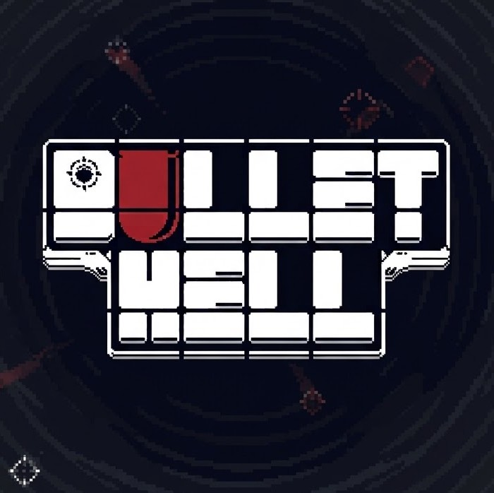
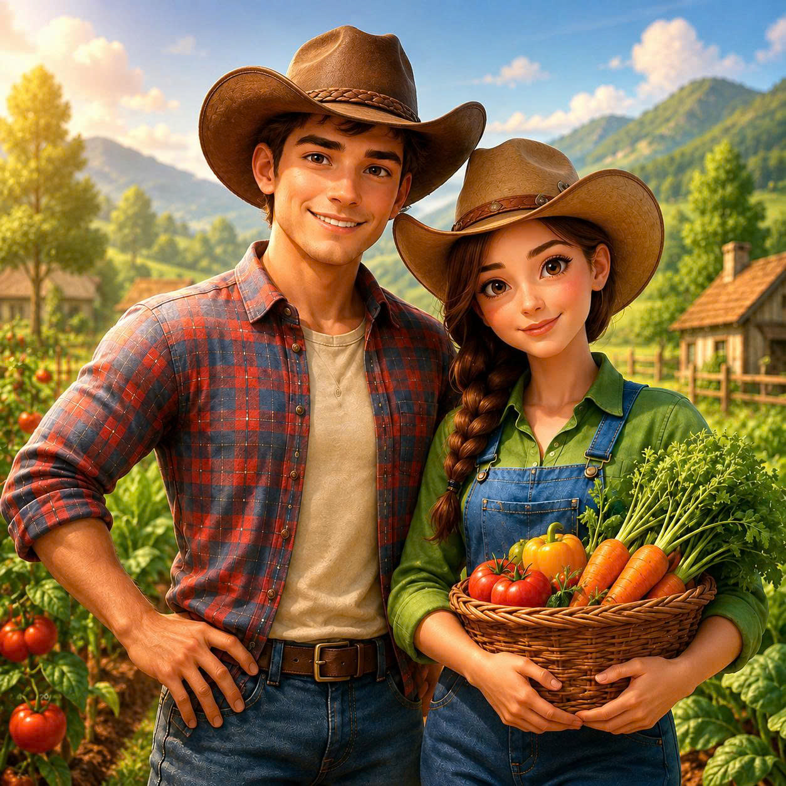
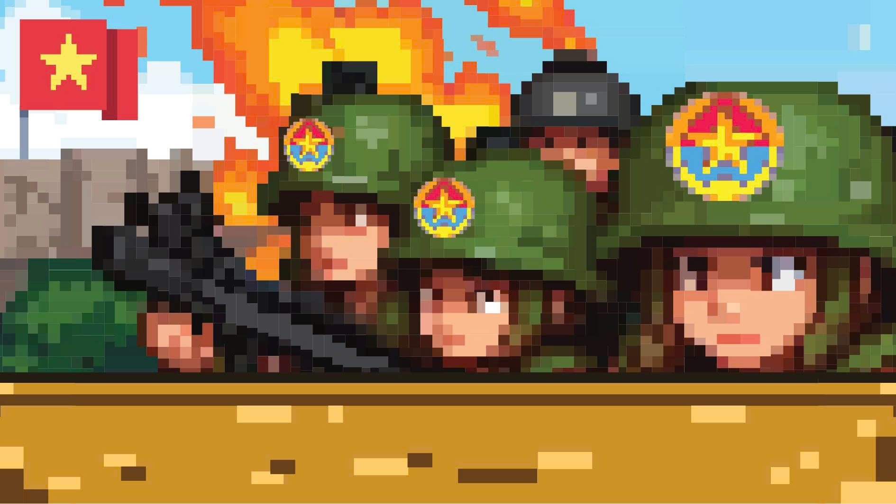
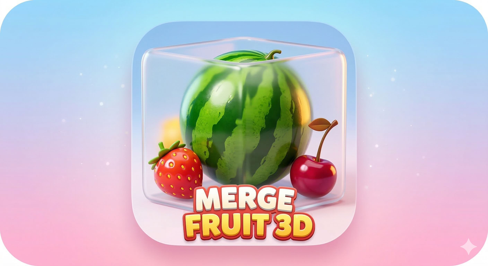
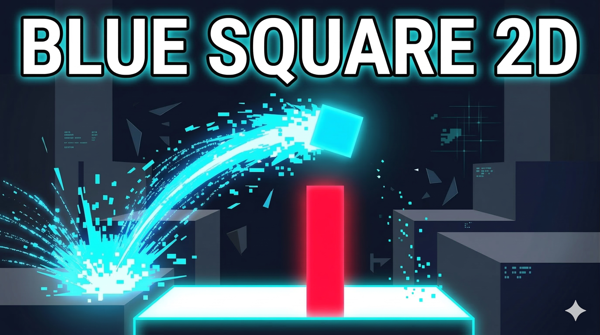
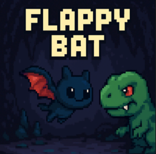

Trò chơi thể loại Rogue-like sinh tồn 2D. Ứng dụng kiến trúc Unity 6 UI Toolkit (UXML/USS), tối ưu hóa còn 3–5 Draw Calls và tích hợp hệ thống bản địa hóa 5 ngôn ngữ.
UI/UX Engineer & Client Developer: Xây dựng hệ thống giao diện người dùng (Main Menu, Loadout & Upgrade, Shop, Daily Quests, Settings, Pause, Game Over/Win-Loss, HUD, Tutorial) bằng Unity 6 UI Toolkit (UXML + USS + C#). Tích hợp xác thực tài khoản Firebase Auth trong quy trình tải dữ liệu ban đầu.

Trò chơi mô phỏng nông trại 3D. Triển khai Core Gameplay, hệ thống xây dựng 3D Grid, tính toán tiến trình Offline theo Unix Timestamp và giao diện UI Toolkit cho Mobile.
Unity Game Developer (Core Gameplay, Simulation & UI Architecture): Lập trình hệ thống Nông trại & Chăn nuôi (chu kỳ sinh trưởng cây trồng, vật nuôi, cơ chế suy giảm trạng thái), Hệ thống Xây dựng & Quy hoạch lưới 3D (BuildGridManager), Lưu trữ dữ liệu Offline/Online theo Unix Timestamp, Giao diện Mobile bằng UI Toolkit (UXML/USS) và Rigging dụng cụ vào Humanoid Animator.

Trò chơi thể loại Tower Defense 2D gồm 10 chiến dịch. Triển khai cơ chế định vị/nâng cấp tháp, đạn đạo, bẫy chiến thuật AOE và quản lý dữ liệu bằng ScriptableObject.
Gameplay & Core Mechanics Programmer: Lập trình hệ thống Đặt tháp & Menu tương tác ngữ cảnh (Nâng cấp Lv1→3, Hủy tháp giải phóng ô đất), Hệ thống Tác chiến tháp (quét mục tiêu, Fire Rate, đạn bay va chạm), Kẻ địch & Đợt tấn công theo Waypoints (Mathf.Atan2), Hệ thống Bẫy chiến thuật (Bẫy mìn AOE, Bẫy chông) và Module dữ liệu 10 chiến dịch.

Trò chơi giải đố hợp nhất 3D mô phỏng va chạm vật lý. Tích hợp thuật toán dự đoán quỹ đạo rơi bằng Raycast và giao diện UI Toolkit.
Unity Gameplay & Physics Developer: Lập trình logic nhận diện va chạm hợp nhất đối tượng cùng cấp (Merge Evolution), cơ chế điều khiển giới hạn biên (Clamp), đường ngắm dự đoán quỹ đạo rơi (Raycast + LineRenderer), cảm biến phát hiện điều kiện kết thúc màn chơi (Hazard Sensor) và hệ thống giao diện UI Toolkit.

Trò chơi thể loại Endless Runner / Platformer 2D. Ứng dụng Generic Object Pooling, cơ chế điều khiển Coyote Time, Jump Buffering và chuyển đổi giao diện động (Dynamic Theme).
Unity Gameplay & Systems Developer: Lập trình cơ chế di chuyển và nhảy (Coyote Time, Jump Buffering), tiếp nhận điều khiển đa thiết bị qua Unity New Input System. Xây dựng ThemeManager xử lý chuyển đổi màu sắc môi trường theo mốc điểm, điều tiết biến thiên tốc độ (gameSpeed) và hiệu ứng rung máy quay (Cinemachine Impulse).

Trò chơi thể loại Arcade 2D. Triển khai vòng đời Game Loop, Sprite Animation, cơ chế thu thập vật phẩm hồi phục và xuất bản trên Windows, Android.
Solo Developer: Thiết kế và lập trình vòng đời trò chơi (Menu, Playing, Game Over, Restart), hệ thống sinh chướng ngại vật ngẫu nhiên theo chiều cao, cơ chế thu thập vật phẩm hồi phục máu, tính toán thời gian tồn tại và đóng gói đa nền tảng.